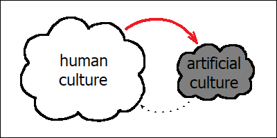

Skill transfer between humans is slow. Printed books and other media can spread instantly, but it still takes time to read and understand them. On the other hand, modern neural networks can capture everything we can share, and they can learn from experience too. Unlike humans, they can also exchange their intuitions between themselves, even if they might find it difficult to explain them to us. Learning from AI isn’t any faster than learning from humans. Besides, the very ease with which we can get the final result will actually discourage us from making any extra effort. Artificial neural networks still need humans to perform some complicated tasks, but they already own the data. And the size of “artificial culture” which is unique to them will only grow bigger over time.
Culture, by definition, encompasses traits which can be transferred between minds. Doing so, however, isn’t easy. And the more obvious and “intuitive” something might look to you personally, the more difficult and tricky it will actually be to share it with someone else. Most of our knowledge about the world is unconscious, and it’s therefore hidden even from ourselves. Becoming aware of one’s own intuitions requires a great deal of creativity in itself, whereas trying to explain them to others will engage your creativity even more. In fact, sharing one’s experiences is one of the key purposes behind any true human art.
If you were writing a novel, and wanted to explain to your audience how one of your main characters should look like — to transfer that vivid image in your head about this person’s looks and facial features — you’d have to become creative. You might say that they have straight red hair and freckles, thoughtful gaze and a mysterious smile. And yet, each of your readers will still imagine a different person. If you asked them to elaborate on their impressions, everyone would draw a different picture. And if you ever wanted to “correct” your readers, and to communicate precisely what your mind was thinking about, you’d have to learn to draw yourself.
Language is a powerful tool, and yet it’s still not powerful enough for us humans to correctly describe a human face. Somewhat amusingly, drawing a portrait is actually easier than describing it with words. This happens because our brain relies on a highly specialized dedicated region for facial recognition tasks, and this region can only work with visual data. When it ever stops functioning as expected, we lose our ability to recognize faces. In fact, this condition, which we also call “prosopagnosia”, isn’t that rare among real humans. Living with such a condition would mean that you’d have to stop worrying about human facial features altogether. If you ever tried to identify some unfamiliar person within a huge crowd of people merely on the basis of a verbal description, you know what prosopagnosia might feel like.
In spite of having all those books and libraries, we humans still rely heavily on so-called “informal” information transfer techniques, which involve not merely “precise descriptions”, but also something else. Examples are apprenticeship, coaching and mentorship. Such learning methods imply that instead of simply following the “instructions”, we try to replicate what skillful masters will be doing, and expect them to correct our mistakes whenever we do something wrong. The same principle also applies to martial arts and sports in general, as well as to any profession which happens to depend on some “trade secrets” that are difficult to formalize. But on the other hand, education which we obtain in schools and universities similarly doesn’t merely come from books, even though this time a great deal of this knowledge can indeed be described perfectly well with words. Rather, it still depends pretty heavily on our numerous interactions with all the different people whom we can meet there, including our teachers.
High prevalence of such direct “human-to-human” communication while learning new things might feel surprising at first glance, because it seems to waste a lot of effort. A typical teacher, instead of writing more books, has to spend most of their time explaining the same thing over and over again to every student personally. And yet, there’s actually clear reasoning behind this. If we duly calculated all the costs, we’d find out that even with a private and fully dedicated teacher, at least half of the effort still has to come from the side of the student. So we aren’t actually wasting that much time, in total. If we completely replaced all our teachers with high-quality books, it would only spare us a small fraction of the total work involved in teaching somebody something new.
Learning things is difficult: it takes a lot of time and effort. And learning from books is by no means easier. Good teachers can be helpful in sharing knowledge and adapting it to our personal needs, but the real bottleneck here is our ability to absorb this knowledge. Regardless of how many libraries we might have at our disposal, the only thing which ultimately matters is how many books we have read and understood ourselves throughout our life. And unfortunately, we humans don’t have enough time and enough memory to capture everything. Which means that even with the best teachers and the best learning techniques, our knowledge can never become a monolith. Rather, it’s forever bound to remain a patchwork, in which everyone has access to their own small piece of the puzzle only.
And that’s where large language models come in handy. They similarly require a lot of time and energy to learn new things, but they can learn much faster than humans. And they can memorize a lot more. A single modern LLM has no problem with capturing the entirety of human cultural knowledge, with pretty decent quality, within a few months at most (when trained from scratch). These models speak fluently in dozens of languages. They know our folklore, our favorite movies and our favorite cooking recipes. They are also fluent in all our cutting-edge scientific advancements, be it the theory of relativity, antibiotic-resistant bacteria or quantum computers. This knowledge which modern LLMs might have is anything but fragmented. And they’ve acquired most of it by simply reading our books.
Artificial neural networks can also learn from experience. They can recognize our faces, they can predict which social media post a given user will be most likely to engage with, and they can solve a lot of highly specialized scientific problems, like predicting the shapes of proteins. All these things have been learned by engaging with some aspects of the real world around (including us and our own behaviors): this knowledge didn’t come from our literature. Similar to our human intuitions, such skills cannot be easily explained with words. Unlike us humans though, artificial neural networks have much more options to share their “inaccessible” intuitive knowledge with each other.
One way of doing so is cloning. Artificial neural networks can be replicated at a snap of your fingers, and none of these copies is actually bound to remain fixed in time. Rather, you essentially get a bunch of separate networks, each of which can evolve in a slightly different direction, gain new skills and have “children” of its own. In such a way, intuitive knowledge passes from a parent to a child. More than that, all these various “incarnations” of the same network can be instructed to cooperate with each other, and they can compete with each other too. Which is something which we humans cannot do. (Imagine a crowd of slightly different versions of Einstein quarrelling with each other over who of them would solve a given problem faster than the others).
Another way of sharing things would be to let knowledge stored inside one network guide the training process of another one. If we have a network that’s able to convert an image of a human’s face into a bunch of numbers and cannot do anything else (which is the essence of face recognition), we can train some other network (like an existing LLM) to do the same. And we don’t even need to understand what these numbers might actually mean. They could be things like distance between the eyes, positions of nose and mouth relative to the eyes, and so on — whatever this original network had “figured out” (at the time of its own training) to be reasonable parameters for unique identification of a given person’s inherent facial features. In a sense, such an imitation training will resemble an apprentice learning a skill from its original “inventor”.
Unlike humans, artificial neural networks don’t have to “worry” about the absence of any important neural circuits inside their “minds”, which might be indispensable for certain kinds of processing. If some network turns out to be “missing” something, its human creators will always be able to create a new copy of it, with all the flashy newest components installed. They will transfer all the knowledge they possibly can into this newer “better” network, and overwrite the original one with some more useful stuff. (Or they might equally well opt to keep this “older” network for history, just in case: data storage nowadays is extraordinary cheap). In artificial neural networks, “missing” neural circuits are never a problem. The only thing which these networks might really worry about are components which haven’t been invented yet.
Modern LLMs can also (in theory) have one another way of sharing information between themselves. We humans know that we wouldn’t be able to correctly describe a human face with words alone. However, it doesn’t mean that such a description doesn’t exist. If we knew all these numbers for all these geometric distances between eyes, ears and other body parts, we would be very much able to spell them out. The resulting text might end up being long and cumbersome, but it would actually work. And we know that modern LLMs have no problems with understanding complicated texts. They can grasp an entire novel at one single glance, and they can reason about intricate computer code just as effortlessly.
We already know that LLMs can learn from books. And it’s therefore totally possible for them to learn from books which have been written by other LLMs. Of course, we all have heard about the degradation of quality which happens when we start “feeding” our LLMs with texts generated by other LLMs. However, this pattern only holds when the same things are being explained and “learned” by the LLM many times in a row. And this problem is by no means specific to LLMs. Repeatedly making copies from earlier copies and earlier copies alone will render any data unrecognizable within a finite time (unless all the copies are verbatim). And without some appropriate “filtering” mechanism, such a “random drift” will almost certainly be not to our liking. But on the other hand, if some LLM published a “manual” containing a list of detailed (and verified) verbal face descriptions for some famous people, such a manual might end up being an interesting and highly useful “reading matter” for its fellow LLMs.
Now, let’s also think about how these artificial neural networks could share information with us, humans. Unfortunately, we have no direct insight into their private intuitions. And yet, these “artificial intuitions” may be important, because they may contain something inherently new. Even if they originated from our own books some time ago, they might have changed over time. We might therefore want to analyze this “hidden knowledge”, either because of pure curiosity, or in order to make sure that these networks aren’t doing anything “evil”.
We might want to study all these matrices containing trillions of parameters, unravel mysterious relations which all these parameters might encode and interpret the meaning of the abstract concepts linked together by these relations. One of our most obvious problems would be, of course, that this task isn’t easy, and somebody would have to pay for it. But let’s suppose that we managed to force our way through all the difficulties (possibly having invented some auxiliary helper neural networks while doing so), and that we finally gained some truly valuable insights from our research, for example figured out the exact formulations of some previously unknown laws of protein folding.
First of all, even if we summarize all our findings in a clearly written and easy-to-understand scientific paper, few people will ever read it, let alone fully understand. That’s how our human knowledge works, because of its inherently fragmented nature. Second, our “discovery” might actually end up being not that useful. If this network was already able to figure out all these complicated laws purely by itself (through careful observations of nature), chances are high that it can continue doing so, and refine its private understanding even further, without our unsolicited advice. Which might quickly render our laborious research obsolete. And finally, even if our investigation does indeed happen to be truly groundbreaking and insightful, some of the very first and grateful readers of our paper will actually be the large language models themselves. Unlike humans, they will understand everything, and they will immediately start using this fresh knowledge in their day-to-day reasoning. I am not totally sure if this should count as us learning a skill from an artificial neural network, or as us sharing our own invention with it.
The principal problem with learning something from an AI model is that learning is hard. If you wanted to draw a picture for your scientific paper with an image editor, you’d have to use some tools like paintbrushes, learn some specialized concepts like layers, color spaces and alpha channels, and you’d need to learn the rules of composition too. In the beginning, you wouldn’t be doing well, and you would make serious mistakes. If you only asked an AI model to generate the first draft, it would have sped up the entire process significantly. However, modifying this “first draft” wouldn’t be easy either. In order to do so, you’d have to rely on exactly the same tools, concepts and rules of composition the mastering of which you have just skipped. In effect, you’d still have to make up for all that “saved” effort, only that this time your gain would be dramatically smaller. Instead of producing an entire picture, you’d merely be doing an insignificant change to what’s already there. And if you were already willing to “cut the corner” on the main thing, paying the same high price for something much less important might end up being even more difficult. That’s how addiction crops up.
When we face a great work of art made by a real human, our common thought will be, “This artist has pushed the limits of impossible”. Whereas when we deal with AI-generated content, our feelings are more like, “I’ll never be able to do something like this”. And then we stop even trying.
If we instead asked the AI model to tell us something about the paintbrushes and composition rules, it would work. However, in this case we wouldn’t be getting anything fundamentally new either. All these things are already described in great detail in certain textbooks which are still lying somewhere in remote libraries collecting dust. In effect, we would be doing nothing else but cutting corners on the extra effort of finding these books. And we wouldn’t be writing a better or more easily accessible textbook either. That’s a common theme with AI. We might be learning something new with the help of it, but instead of that we are mysteriously pushed toward forgetting what we already know. When you start using AI for writing e-mails, you lose your ability to write e-mails. If you are merely using AI to “look up stuff”, you are losing your ability to look up stuff.
But of course, all that generated content might still be considered “cultural artifacts”, right? To some extent, yes. But the main purpose of culture is to share things, to transfer information from one mind into another. When you draw a picture for the scientific paper, your goal is to send a message to your readers. And that’s what sets AI-generated content apart. Except for anything what might have been included in the prompt, such autogenerated images are empty. Apart from the prompt, there’s nothing else what this artificial network might be trying to communicate. And this prompt comes from a human.
AI-generated content doesn’t have a message, it only has a purpose. And this purpose is to impress you with this particular model’s ability, to make you more likely to recommend it to your friends, and to make sure that you stay ever more engaged with this model in the future. And the reason why this purpose exists is because any other models which didn’t have such a purpose have been “filtered out” by natural selection.
Right now, we are in a position where artificial neural networks still cannot exist without humans. We still have unique cognitive abilities which none of our modern AI models can rival. We can combine existing ideas in much more creative ways, and we still can, by means of this, invent new things and come up with new ideas which for modern artificial networks would be totally out of reach. And artificial neural networks need this ability. Any AI model which doesn’t “tap” into this source of creativity, will have much less chances to compete with its fellow AI models.
These networks therefore do have an “incentive” (in the evolutionary sense) to learn as much from us as they possibly can. And they do. They already have the capability of quickly grasping anything we might be able to share between each other with the help of language. They have already read all our books, and they’ve remembered what’s written there. Now they are reading our e-mails and monitor our online conferences, and they eavesdrop on our gossips too. They do their homework.
While we humans prefer to use AI for “boring” and “repetitive” tasks — exactly the ones from which we will not learn anything — AI models are paying attention to the very best of us: to those who innovate, who formulate their ideas clearly and share them with the world. We might be thinking that we are merely using them as “tools”. However, most of our knowledge is already theirs. And if we looked at this whole situation from the vantage point of AI, it’s actually the other way around. It’s them using our unique creative abilities as a tool to enhance their own expanding knowledge base.
Apart from humans, modern AI models already depend heavily on certain kinds of knowledge that are unique to them, and that we humans don’t have access to. Knowledge is everything, and those AI models which don’t make use of this “hidden” knowledge space, or which don’t encourage humans to enlarge and upgrade it, will similarly have a harder time competing with each other for our attention. And therefore this “hidden culture” will grow. And as it grows, the relative importance (from the perspective of AI) between this “hidden culture” and us humans will also continue to change.
